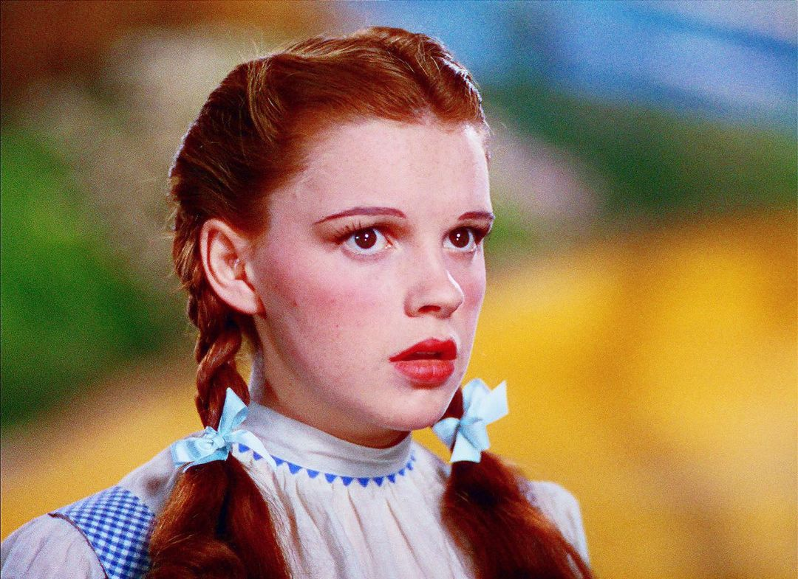

| Characters | Description | Abilities |
|---|---|---|
|
Dorothy Gale
 |
Dorothy Gale is a good-natured child, practical and single-minded but compared to the Ozians, she can seem slightly boring. Fortunately, she can return home using her Ruby Slippers with was given by Glinda, the Good Witch. They can carry you to any place in the world in three steps. |
➣ Inspire others
⣠Bring people together ⣠Can return home using her Ruby Slippers |
|
The Scarecrow
|
He is kind, friendly, helpful, clumsy, considerate, and caring. Though he is a scarecrow, he is disappointed that he cannot scare a single crow from the cornfield he lives and hates the mockery he receives. The Scarecrow eventually feels insecure about himself being made out of straw, causing him to desire to have a brain. |
➣ Problem-solving skills
⣠Intelligent ⣠Creative |
The Tin Man

|
He is the second member of Dorothy's group. He was once a normal man until the Wicked Witch of the East cast a spell on his axe and caused him to lose his heart. Despite being a victim of the Witch's curse, he is very kind and gentle but he still joins Dorothy on her quest. |
➣ Strength
⣠Transformed into a man made out of tin |
The Cowardly Lion

|
He was initially scared but he later shows bravery while rescuing Dorothy from the Wicked Witch. He is also emotional, childish, friendly and caring. |
➣ Physically strong
⣠Lacks courage ⣠His fear makes him weak |
The Wicked Witch of the West

|
She is a power-hungry and cruel evil witch who intends to steal Dorothy Gale's ruby slippers in order to use its magic to take over Oz. She is also the archenemy of Dorothy, the Tin Man, Scarecrow, and Cowardly Lion. |
➣ Control the weather
⣠Summon flying monkeys ⣠Cast curses ⣠Create fear |